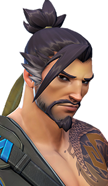
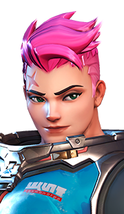

Mon amour pour Overwatch
Je suis passionnée par Overwatch depuis quelques mois. Ce site
a été construit en hommage à ce jeu merveilleux...
Je fais partie de la SAO qui
a pour but de faire connaître ce jeu splendide.
Voici ce qu'en dit le wikipedia :
L'histoire d'Overwatch se situe dans un monde néo-futuriste, des années après la résolution d'une guerre impliquant robots et humains dans la crise des Omniaques. Les deux camps se sont en effet affrontés suite à l'hostilité qu'avaient manifesté plusieurs Omniaques, des robots, qui, contrairement à leurs congénères, déclaraient être dotés d'une conscience1. C'est à cette période que fut créée l'organisation d'Overwatch, dans le but d'éradiquer la menace que représentaient les Omniaques qui s'étaient soulevés afin de ramener le calme. Cependant, la réussite de l'intervention d'Overwatch laissa place à des suspicions qui entraînèrent la destitution de l'organisation, accusée de corruption et sédition durant le conflit. L'explosion qui eut lieu au siège d'Overwatch et fut considérée comme un accident technique y joua notamment un grand rôle : certains pensent que cet accident n'était pas un coup du hasard, et que les opposants de l'organisation y avaient probablement joué un rôle. Quoi qu'il en soit, la mort du commandant en chef Jack Morrison et du second commandant Gabriel Reyes acheva de dissoudre l'unité de l'organisation. Mais récemment, l'ancien agent Winston, après avoir été attaqué par la Griffe, a relancé la mise en service des anciens soldats d'Overwatch après une attaque de l'organisation terroriste sur Gibraltar
Wikipedia







Voici les différents personnages d'Overwatch :
- Ana
- Ange
- Bastion
- Chacal
- Chopper
- D-Va
- Fatale
- Faucheur
- Genji
- Hanzo
- Lucio
- McCree
- Mei
- Pharah
- Reinhardt
- Soldat 76
- Symmetra
- Torbjorn
- Tracer
- Winston
- Zarya
- Zenyatta
| Personnage | Faible contre |
|---|---|
| Ana | D-Va, Genji, Hanzo, Faucheur, Tracer, Fatale, Winston |
| Ange | Bastion, Genji, Faucheur, Chopper, Soldat 76, Tracer, Fatale, Winston |
| Bastion | Genji, Hanzo, Chacal, Pharah, Tracer, Fatale |
| Chacal | Ange, Pharah, Faucheur, Soldat 76, Fatale |
| Chopper | Hanzo, Chacal, Lucio, Mei, Soldat 76, Torbjorn, Zenyatta |
| D-Va | Chacal, Mei, Chopper, Zarya, Zenyatta |
| Fatale | Genji, Lucio, Faucheur, Tracer, Winston |
| Faucheur | Lucio, McCree, Pharah |
| Genji | D-Va, Lucio, Mei, Pharah, Symmetra, Tracer, Winston, Zarya |
| Hanzo | Genji, Reinhardt, Tracer, Fatale, Winston |
| Lucio | Ange, Pharah, Zarya |
| McCree | Bastion, Hanzo, Torbjorn, Fatale, Zarya |
| Mei | Chacal, Zarya, Fatale, Faucheur, Pharah, Lucio |
| Pharah | Bastion, D-Va, Genji, Hanzo, McCree, Chopper, Soldat 76, Fatale |
| Reinhardt | Chacal, McCree, Pharah, Faucheur, Symmetra, Tracer, Zenyatta |
| Soldat 76 | Bastion, Reinhardt, Zarya |
| Symmetra | Chacal, Pharah, Faucheur, Chopper, Torbjorn, Winston, Zarya |
| Torbjorn | D-Va, Genji, Hanzo, Chacal, Faucheur, Reinhardt, Winston |
| Tracer | Chacal, Mei, Pharah, Faucheur, Soldat 76 |
| Winston | Bastion, Lucio, McCree, Mei, Pharah, Faucheur, Zarya, Zenyatta |
| Zarya | Bastion, Ange, Pharah, Fatale |
| Zenyatta | Hanzo, Soldat 76, Torbjorn, Tracer, Fatale, Zarya |
Vous pouvez me contacter à cette adresse :
Overwatch LoverAllée de Gibraltar
58741 Omniacs-sur-Loire